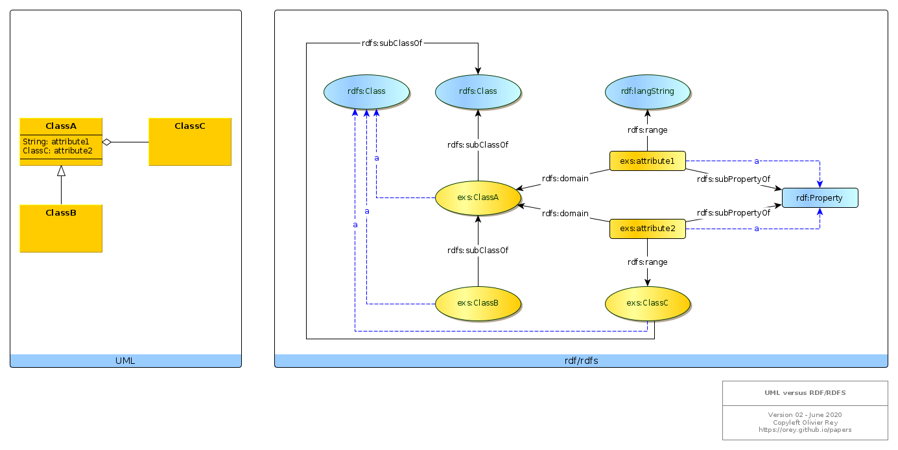

UML to RDF considerations
References
In a W3C article, Semantic Web Best Practices, some indications are provided to compare the semantic web approach with the object-oriented approach. Those indications are very interesting but they are not complete to serve as a guide for software engineers trying to work with semantic web technologies.
This page aims at gathering interesting elements about that topic.
Basic correspondence between UML and rdf/rdfs
Consider the following figure.

Several points must be noted.
Types are instances of rdf:Property and rdfs:Class
Basically, in most existing (RDFS) ontologies, when a new class is created, it is declared as being a rdfs:Class, and when a new property type is created, it is declared as being a rdf:Property. We have this situation in the diagram for exs:ClassA, exs:ClassB, exs:ClassC and for exs:attribute1 and exs:attribute2.
That means that new types, being class types or property types, are considered as "instances" of the "meta-types" rdfs:Class and rdf:Property.
First translation
In the UML diagram, ClassB derives from ClassA. That implies: exs:ClassB rdfs:subClassOf exs:ClassA as an obvious translation of the UML fact.
We can stay like that and have a first UML to RDF translation like follows.
@prefix rdf: <http://www.w3.org/1999/02/22-rdf-syntax-ns#> .
@prefix rdfs: <http://www.w3.org/2000/01/rdf-schema#> .
@prefix owl: <http://www.w3.org/2002/07/owl#> .
@prefix exs: <https://orey.github.io/sample-schema.ttl#> .
exs:ClassA a rdfs:Class.
exs:ClassB a rdfs:Class ;
rdfs:subClassOf exs:ClassA .
exs:ClassC a rdfs:Class.
exs:attribute1 a rdf:Property ;
rdfs:domain exs:ClassA ;
rdfs:range rdf:langString .
exs:attribute2 a rdf:Property ;
rdfs:domain exs:ClassA ;
rdfs:range exs:ClassC .
Second translation
This first translation may be considered as having a slight problem. All new classes could be subClassOf another class, in order to enable reasoning based on sub-classes.
We could enrich a bit our first translation by adding some lines.
@prefix rdf: <http://www.w3.org/1999/02/22-rdf-syntax-ns#> .
@prefix rdfs: <http://www.w3.org/2000/01/rdf-schema#> .
@prefix owl: <http://www.w3.org/2002/07/owl#> .
@prefix exs: <https://orey.github.io/sample-schema.ttl#> .
exs:ClassA a rdfs:Class ;
rdfs:subClassOf rdfs:Class . <= NEW
exs:ClassB a rdfs:Class ;
rdfs:subClassOf exs:ClassA .
exs:ClassC a rdfs:Class ;
rdfs:subClassOf rdfs:Class . <= NEW
exs:attribute1 a rdf:Property;
rdfs:subPropertyOf rdf:Property ; <= NEW
rdfs:domain exs:ClassA ;
rdfs:range rdf:langString .
exs:attribute2 a rdf:Property ;
rdfs:subPropertyOf rdf:Property ; <= NEW
rdfs:domain exs:ClassA ;
rdfs:range exs:ClassC .
Semantically, the a indicates the real nature of the entity and the rdfs:subClass/PropertyOf its type hierarchy.
2 kinds of attribute types
Attribute types are not homogeneous. For a given attribute exs:att, exs:att rdfs:range rdfs:Class may indicate that we are talking about a link or relationship between two objects, whereas exs:att rdfs:range rdfs:Literal may indicate that we have a real attribute with a literal value.
That is one UML and object-orientation deepest problem: the aggregation (and composition) relationships are represented at the same level than the attributes pointing to literal values (see paper on graph-oriented programming). The semantic web enables us to get over this crucial limitation by defining the attribute outside of the class itself.
But, if we want to be effective, we would need a specific root attribute type for the attribute types having a range in the rdfs:Literal world, and a root attribute type for the attribute types that point to objects.
That leads us to the third translation below.
@prefix rdf: <http://www.w3.org/1999/02/22-rdf-syntax-ns#> .
@prefix rdfs: <http://www.w3.org/2000/01/rdf-schema#> .
@prefix owl: <http://www.w3.org/2002/07/owl#> .
@prefix dc: <http://purl.org/dc/elements/1.1/> .
@prefix ga: <https://orey.github.io/graphapps-V2#> .
@prefix exs: <https://orey.github.io/sample-schema.ttl#> .
exs:ClassA a rdfs:Class ;
rdfs:subClassOf ga:Class . <= NEW
exs:ClassB a rdfs:Class ;
rdfs:subClassOf exs:ClassA .
exs:ClassC a rdfs:Class ;
rdfs:subClassOf ga:Class . <= NEW
exs:attribute1 a rdf:Property ;
rdfs:subPropertyOf ga:attribute ; <= NEW
rdfs:domain exs:ClassA ;
rdfs:range rdf:langString .
exs:attribute2 a rdf:Property ;
rdfs:subPropertyOf ga:link ; <= NEW
rdfs:domain exs:ClassA ;
rdfs:range exs:ClassC .
The root attribute type for attribute types having a range in rdfs:Literal is ga:attribute, and the root attribute type for attribute types that point to classes is ga:link.
If we want to be sure that classes are realm classes, and because rdfs:Class maybe sometimes too large, we defined ga:Class as the root type for all classes.
That provides the following RDFS-based ontology:
@prefix rdf: <http://www.w3.org/1999/02/22-rdf-syntax-ns#> .
@prefix rdfs: <http://www.w3.org/2000/01/rdf-schema#> .
@prefix owl: <http://www.w3.org/2002/07/owl#> .
@prefix dc: <http://purl.org/dc/elements/1.1/> .
@prefix ga: <https://orey.github.io/graphapps-V2#> .
<https://orey.github.io/graphapps-V2#> a owl:Ontology ;
dc:title "GraphApps ontology for building semantic applications" ;
dc:date "2020-06-21" ;
dc:description "This ontology describe the minimal set of constructs required to build applications in the spirit of the GraphApps works." .
ga:Class a rdfs:Class ;
rdfs:subClassOf rdfs:Class ;
rdfs:isDefinedBy <https://orey.github.io/graphapps-V2#> ;
rdfs:label "Class" ;
rdfs:comment "Root class of the GraphApps classes." .
ga:attribute a rdf:Property ;
rdfs:subPropertyOf rdf:Property ;
rdfs:isDefinedBy <https://orey.github.io/graphapps-V2#> ;
rdfs:label "attribute" ;
rdfs:comment "Root property of final data attributes." ;
rdfs:domain ga:Class ;
rdfs:range rdfs:Literal .
ga:link a rdf:Property ;
rdfs:subPropertyOf rdf:Property ;
rdfs:isDefinedBy <https://orey.github.io/graphapps-V2#> ;
rdfs:label "link" ;
rdfs:comment "Root property of link between ga:Class." ;
rdfs:domain ga:Class ;
rdfs:range rdfs:Class .
ga:id a ga:attribute ;
rdfs:isDefinedBy <https://orey.github.io/graphapps-V2#> ;
rdfs:label "id" ;
rdfs:comment "Instance of attribute type to define a unique id for ga:Class instances." ;
rdfs:domain ga:Class ;
rdfs:range rdfs:Literal .
Such a grammar is enabling several things:
- Translate UML concepts in semantic web concepts;
- Distinguish between topological links between concepts, and values of attributes;
- Reason on less ambiguous concepts;
- Benefit from the RDF/RDFS definition of attributes out of classes;
- Enable graph transformations based on a set of non ambiguous concepts.
The grammar can be found here.
(June 2020)